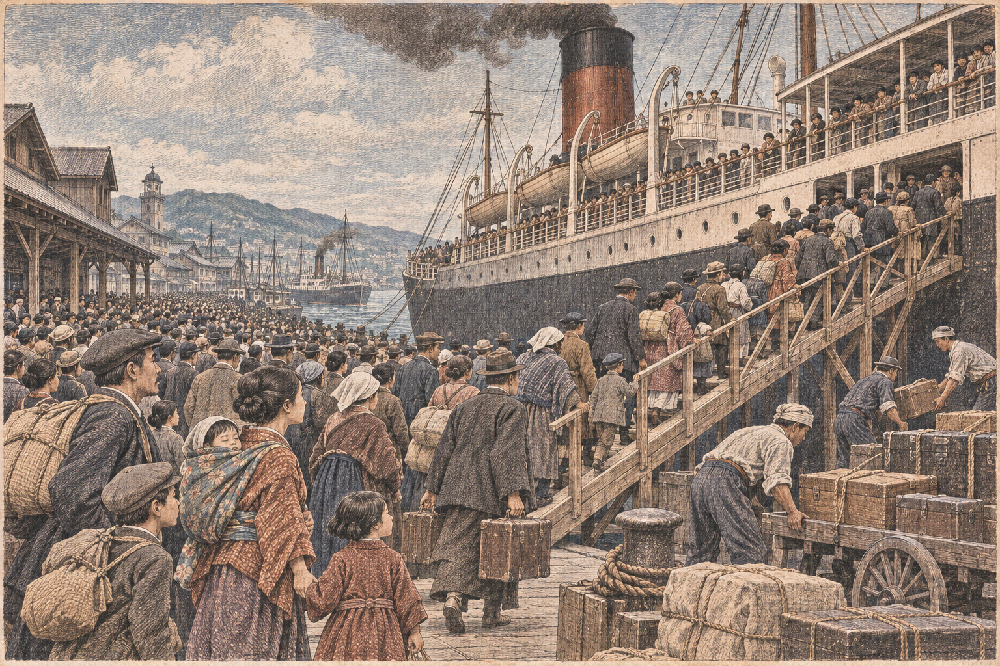
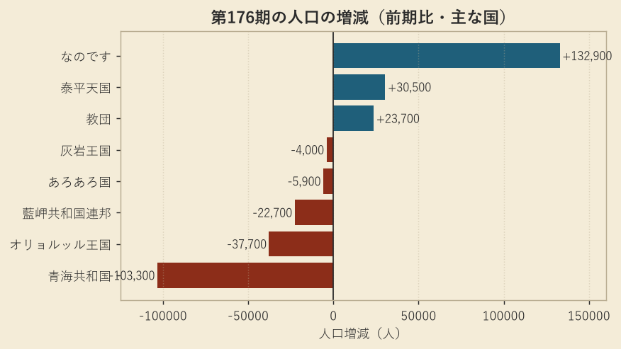

青海からなのですへ、十一万六千人の大移住
海運の共和国から、開発の電都へ
青海の人口は三割近く減り、受け入れたなのですは百三十二万に膨らんだ 近年まれにみる規模の人の流れが、盤面の勢力図を静かに塗り替えつつある

【総合部】第176期、青海共和国からなのです主義人民共和国へ、十一万六千四百人もの民が移り住んだ。青海の人口は三十四万五千八百人から二十四万二千五百人へと、わずか一期で十万三千人あまり、三割近くも減った。受け入れたなのですは百十九万二千三百人から百三十二万五千二百人へと、十三万二千九百人も膨らみ、盤面でも指折りの大国へと一段と厚みを増した。これほど大きな人の流れは、近年の盤面でもそう見かけない。
なぜ、海運と重工業で知られる共和国から、これほどの民が去ったのか。青海はこの期、カペレナや黄砂との戦を畳み、戦争の相手を一つも抱えない静けさの中にあった。それでも人は動いた。向かった先は「引きこもって開発したいのです」を掲げ、戦を避けて産業を肥やしてきたなのです。食料は上限の三百万トンに達し、働き手の不足もない。民は、戦のない豊かな土地を選んで海を渡ったとみられる。青海にとっては働き手の大量流出であり、なのですにとっては国力の一段の飛躍である。

首位オリョルッルも、人口を減らす
人の動きは青海だけではない。首位オリョルッル王国も、この期は人口を三万七千七百人減らし、百七十六万八千九百人となった。長く増え続けてきた北の巨人が減少に転じたのは珍しい。もっとも、食料は二百六十六万トンから二百八十万トンへと増え、兵力も七万七千人厚くした。王国は人より土地と兵に力を注いだ期であった。その王国が、この期ついに戦端を開く。詳報は2面。
あろあろからも、カペレナへ一万
小さな流れもあった。あろあろ国からカペレナ王国へ、一万五百人が移り住んだ。中立を掲げ「鋼鉄貿易が過去最高級」と誇るカペレナは、人も惹きつけ始めている。人の移動という面からも、盤面の重心が少しずつ動いている。社会面の詳報は6面。